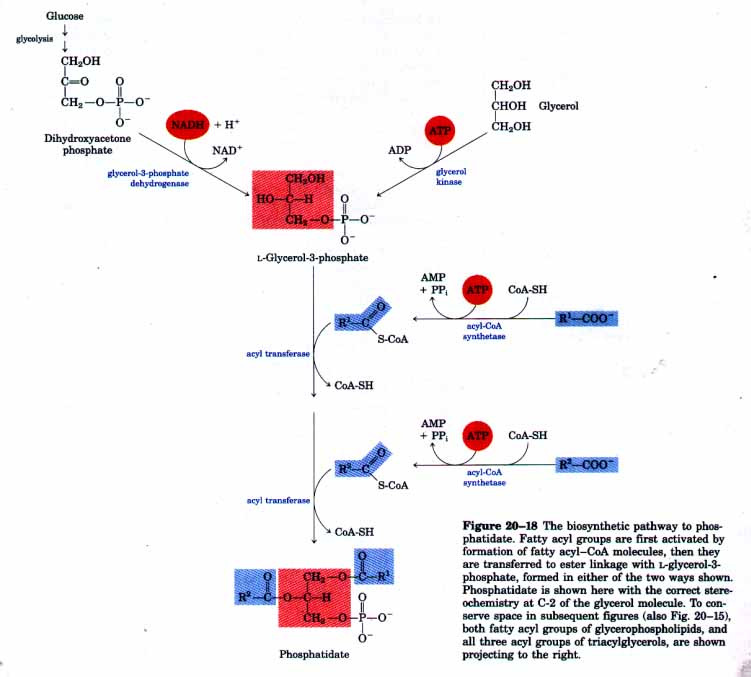
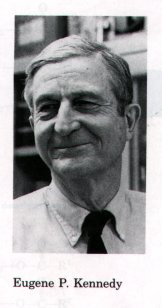
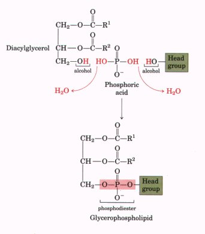
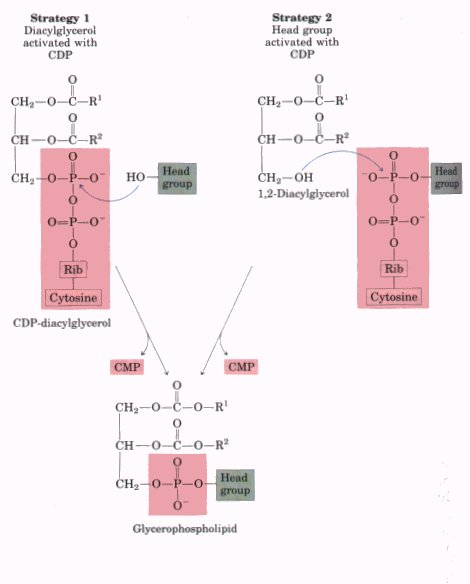
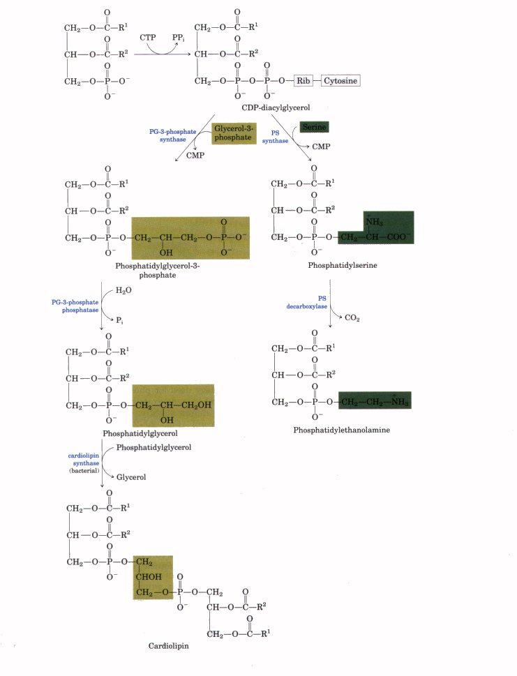
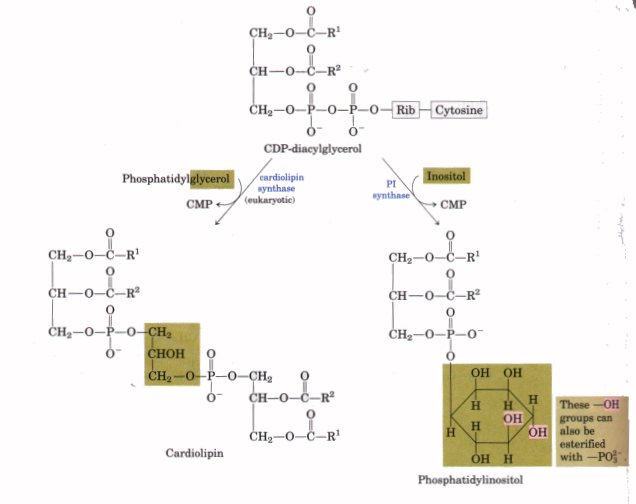

Most of the fatty acids synthesized or ingested by an organism have one of two fates: incorporation into triacylglycerols for the storage of metabolic energy or incorporation into the phospholipid components of membranes. The partitioning between these alternative fates depends on the requirements of the organism. During rapid growth, the synthesis of new membranes requires membrane phospholipid synthesis; organisms that have a plentiful supply of food but are not actively growing shunt most of their fatty acids into storage fats. The pathways to storage fats and several classes of membrane phospholipids begin at the same point: the formation of fatty acyl esters of glycerol. First we discuss the route to triacylglycerols and its regulation.
Animals can synthesize and store large quantities of triacylglycerols, to be used later as fuel (see Box 16-1). In humans only a few hundred grams of glycogen can be stored in the liver and muscles, barely enough to supply the body's energy needs for 12 hours. In contrast, the total amount of stored triacylglycerol in a 70 kg man of average build is about 15 kg, enough to supply his basal energy needs for as long as 12 weeks (see Table 22-5). Whenever carbohydrate is ingested in excess of the capacity to store glycogen, it is converted into triacylglycerols and stored in adipose tissue. Plants also manufacture triacylglycerols as an energy-rich fuel, stored especially in fruits, nuts, and seeds.
Triacylglycerols and glycerophospholipids such as phosphatidylethanolamine share two precursors (fatty acyl-CoAs and glycerol-3-phosphate) and several enzymatic steps in their biosynthesis in animal tissues. Glycerol-3-phosphate can be formed in two ways (Fig. 20-18). It can arise from dihydroxyacetone phosphate generated during glycolysis by the action of the cytosolic NAD-linked glycerol-3phosphate dehydrogenase, and in liver and kidney it is also formed from glycerol by the action of glycerol kinase. The other precursors of triacylglycerols are fatty acyl-CoAs, formed from fatty acids by acylCoA synthetases (Fig. 20-18), the same enzymes responsible for the activation of fatty acids for β oxidation (Chapter 16).

The first stage in the biosynthesis of triacylglycerols is the acylation of the two free hydroxyl groups of glycerol-3-phosphate by two molecules of fatty acyl-CoA to yield diacylglycerol-3-phosphate, more commonly called phosphatidate (Fig. 20-18). Phosphatidate occurs in only trace amounts in cells, but is a central intermediate in lipid biosynthesis; it can be converted either to a triacylglycerol or to a glycerophospholipid. In the pathway to triacylglycerols, phosphatidate is hydrolyzed by phosphatidate phosphatase to form a 1,2-diacylglycerol (Fig. 20-19). Diacylglycerols are then converted into triacylglycerols by transesterification with a third fatty acyl-CoA.
Triacylglycerol Biosynthesis in Animals Is Regulated by HormonesIn humans, the amount of body fat stays relatively
constant over long periods, although there may be minor
short-term changes as the caloric intake fluctuates.
However, if carbohydrate, fat, or protein is consumed in
amounts exceeding energy needs, the excess is stored in
the form of triacylglycerols. The fat stored in this way
can be drawn upon for energy and enables the body to
withstand periods of fasting. |
Figure 20-19 Phosphatidate is the precursor of both triacylglycerols and glycerophospholipids. The mechanisms for head group attachment in phospholipid synthesis are described later. Figure 20-20 Insulin stimulates conversion of dietary carbohydrates and proteins into fat. In individuals with untreated diabetes mellitus, acetyl-CoA from catabolism of carbohydrates and proteins is instead shunted to ketone body production, because of the lack of insulin. |

In Chapter 9 we introduced two major classes of membrane phospholipids: glycerophospholipids and sphingolipids. We noted that many different phospholipid species can be constructed by combining various fatty acids and polar head groups with the glycerol or sphingosine backbones (see Figs. 9-7, 9-9). Although the number of different end products of phospholipid biosynthesis is very large, all of these diverse products are synthesized according to a few basic patterns. We will describe the biosynthesis of selected membrane lipids to illustrate these patterns. In general, the assembly of phospholipids from simple precursors requires (1) synthesis of the backbone molecule (glycerol or sphingosine); (2) attachment of fatty acid(s) to the backbone, in ester or amide linkage; (3) addition of a hydrophilic head group, joined to the backbone through a phosphodiester linkage; and in some cases, (4) alteration or exchange of the head group to yield the fmal phospholipid product.
In eukaryotic cells, phospholipid synthesis occurs primarily at the surface of the smooth endoplasmic reticulum. Some newly synthesized phospholipids remain in that membrane, but most are destined for other cellular locations. The process by which water-insoluble phospholipids move from the site of their synthesis to the point of their eventual function is not fully understood, but we will conclude by discussing some mechanisms that have emerged in recent years.
|
The first steps of glycerophospholipid synthesis are shared with the pathway to triacylglycerols (Fig. 20-19): two fatty acyl groups are esterified to C-1 and C-2 of L-glycerol-3-phosphate to form phosphatidate. Commonly but not invariably, the fatty acid at C-1 is saturated and that at C-2 is unsaturated. A second route to phosphatidate is the phosphorylation of a diacylglycerol by a specific kinase. The polar head group of glycerophospholipids is attached through a phosphodiester bond, in which each of two alcoholic hydroxyls (one on the polar head group and one on C-3 of glycerol) forms an ester with phosphoric acid (Fig. 20-21). In the biosynthetic process, one of the hydroxyls is first activated by attachment of a nucleotide, cytidine diphosphate (CDP). Cytidine monophosphate (CMP) is then displaced in a nucleophilic attack by the other hydroxyl (Fig. 20-22, p. 662). The CDP is attached either to the diacylglycerol, forming in effect an activated phosphatidate, CDP-diacylglycerol (strategy 1), or to the hydroxyl of the head group (strategy 2). The central importance of cytidine nucleotides in lipid biosynthesis was discovered by Eugene P. Kennedy in the early 1960s. |
 Figure 20-21 The phospholipid head group is attached to a diacylglycerol by a phosphodiester bond, formed when phosphoric acid condenses with two alcohols, eliminating two molecules of H2O. |

Figure 20-22 Two general strategies for forming the phosphodiester bond of phospholipids. In both cases CDP supplies the phosphate group of the phosphodiester bond.
The first strategy for head group attachment is illustrated by the synthesis of phosphatidylserine, phosphatidylethanolamine, and phosphatidylglycerol in E. coli. The diacylglycerol is activated by condensation of phosphatidate with CTP to form CDP-diacylglycerol, with the elimination of pyrophosphate (Fig. 20-23). Displacement of CMP through nucleophilic attack by the hydroxyl group of serine or by the C-1 hydroxyl of glycerol-3-phosphate yields phosphatidylserine or phosphatidylglycerol-3-phosphate, respectively. The latter is processed further by cleavage of the phosphate monoester (with release of Pi) to yield phosphatidylglycerol.
Phosphatidylserine and phosphatidylglycerol can both serve as precursors of other membrane lipids in bacteria (Fig. 20-23). Decarboxylation of the serine moiety in phosphatidylserine by phosphatidylserine decarboxylase yields phosphatidylethanolamine. In E. coli, condensation of two molecules of phosphatidylglycerol, with the elimination of one glycerol, yields cardiolipin, in which two diacylglycerols are joined through a common head group.

Figure 20-23 Origin of the polar head groups of phospholipids in E. coli. Initially, a head group (either serine or glycerol-3-phosphate) is attached via a CDP-diacylglycerol intermediate (strategy 1). For phospholipids other than phosphatidylserine, the head group is further modified, as shown here. In the enzyme names, PG represents phosphatidylglycerol, and PS, phosphatidylserine.

Figure 20-24 The synthesis of cardiolipin and phosphatidylinositol in eukaryotes (strategy 1, Fig. 20-22). Phosphatidylglycerol is synthesized as in bacteria (see Fig. 20-23). PI represents phosphatidylinositol.